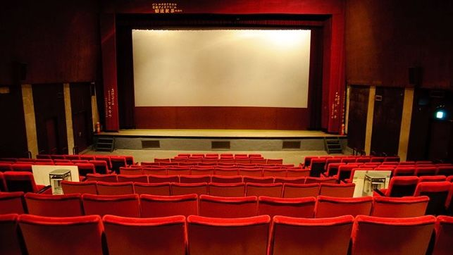

Siempre me ha gustado jugar fútbol, desde niño siempre quise jugar profesionalmente, ha sido mi sueño desde entonces, puedo decir sin pena que hasta la fecha, hoy a mis 22 años, sigue siendo mi más grande pasión, junto a otros deportes.

Jugar videojuegos es de las maneras que más me sirven para calmarme, relajarme e inclusive para reflexionar, de todo tipo de videojuegos ya sean de deportes, RPG´S etc, y también cualquier tipo de consola, PS4, Xbox, Nintendo, PC.
Me gusta demasiado ver películas, de cualquier género, me gusta culturizarme en ese ámbito, disfruto mucho la experiencia de ir al cine hasta la de estar en tú casa y verlas, creo que me hace tener un amplio tema de conversación y me sirve mucho para relajarme e incluso para reflexionar.
Cuando me cuestiono mis creencias o pensamientos respecto a algún tema disfruto mucho para reflexionar un buen libro, procuro leer mínimo un libro al mes, y para ver o mostrarme que si entendi lo que leí, escribo reflexiones, estadísticas y formas de demostrar el conocimiento.